Workshop 4: Benchmarking Open-TYNDP Outcomes and Running CBA Workflows#
Note
At the end of this notebook, you will be able to:
1. Use PyPSA’s statistics module to reproduce Open-TYNDP benchmarks
Navigate and analyze Open-TYNDP NT scenario outcomes using PyPSA’s statistics module
Compare modeling outcomes and methodologies interactively
2. Use PyPSA-Explorer to investigate latest Open-TYNDP outcomes
Investigate latest Open-TYNDP networks using PyPSA-Explorer and compare with benchmarking framework
Identify potential inconsistencies, methodological differences, areas where Open-TYNDP can improve
3. Run CBA workflows
Learn how to run CBA analysis coupled to or detached from the Scenario Building workflow
Modify the CBA configuration for one specific or multiple projects on one or a set of different climate years
Note
If you have not set up Python on your computer, you can execute this tutorial in your browser via Google Colab. Click the rocket button in the top right corner and launch “Colab”. If that doesn’t work, download the .ipynb file and import it in Google Colab.
Then install the required packages by executing the following command in a Jupyter cell at the top of the notebook:
!pip install pypsa pypsa-explorer pandas matplotlib numpy pdf2image
!apt-get install poppler-utils
# uncomment for running this notebook on Colab
# !pip install pypsa pypsa-explorer pandas matplotlib numpy pdf2image
# !apt-get install poppler-utils
import os
from datetime import datetime
import pandas as pd
import pypsa
import shutil
import zipfile
from urllib.request import urlretrieve
from pdf2image import convert_from_path
from pdf2image.exceptions import PDFPageCountError
from IPython.display import SVG, Code, IFrame, Image, display
import matplotlib.pyplot as plt
from pypsa_explorer import create_app
from pathlib import Path
import cartopy.crs as ccrs
from pypsa.plot.maps.static import (
add_legend_lines,
)
pypsa.set_option("params.statistics.nice_names", True)
pypsa.set_option("params.statistics.drop_zero", True)
pypsa.set_option("params.statistics.round", 3)
plt.rcParams["figure.figsize"] = [14, 7]
clip = 1 # TWh
def unzip_with_timestamps(zip_path, extract_to, keep_zip=True):
"""Unzip a file while preserving original file timestamps."""
with zipfile.ZipFile(zip_path, "r") as zip_ref:
for member in zip_ref.infolist():
# Extract the file
zip_ref.extract(member, extract_to)
# Get the extracted file path
extracted_path = os.path.join(extract_to, member.filename)
# Get the modification time from the zip file
date_time = datetime(*member.date_time)
timestamp = date_time.timestamp()
# Set both access and modification times
os.utime(extracted_path, (timestamp, timestamp))
if not keep_zip:
os.remove(zip_path)
As in previous workshops, we first need to retrieve some files that we’ll need today.
urls = {
"data/results-0.7.1.zip": "https://storage.googleapis.com/open-tyndp-data-store/outcomes/0.7.1/results-0.7.1.zip",
"scripts/_helpers.py": "https://raw.githubusercontent.com/open-energy-transition/open-tyndp-workshops/792b8474ab5096e5ab8db2822af4fcd9fe659eb6/open-tyndp-workshops/scripts/_helpers.py",
}
os.makedirs("data", exist_ok=True)
os.makedirs("scripts", exist_ok=True)
for name, url in urls.items():
if os.path.exists(name):
print(f"File {name} already exists. Skipping download.")
else:
print(f"Retrieving {name} from storage.")
urlretrieve(url, name)
print(f"File available in {name}.")
to_dir = "data/results-0.7.1"
if not os.path.exists(to_dir):
print(f"Unzipping data/results-0.7.1.zip.")
unzip_with_timestamps("data/results-0.7.1.zip", "data/results-0.7.1")
print(f"Latest NT results for Open-TYNDP v0.7.1 are available in '{to_dir}'.")
print("Done")
Retrieving data/results-0.7.1.zip from storage.
File available in data/results-0.7.1.zip.
File scripts/_helpers.py already exists. Skipping download.
Unzipping data/results-0.7.1.zip.
Latest NT results for Open-TYNDP v0.7.1 are available in 'data/results-0.7.1'.
Done
And we’ll also import some handy helper functions to use later.
from scripts._helpers import display_tree, show_benchmarks
Reminder: The PyPSA.statistics module#
n.statistics provides a consistent, high-level API that handles component iteration, port mapping, and carrier grouping automatically.
Tip
n.stats is available as a shorthand alias for n.statistics.
Each method can be called individually or explored via the summary table:
Category |
Methods |
|---|---|
Costs |
|
Capacity |
|
Energy |
|
Market |
|
Every method accepts the same filtering and grouping parameters:
Parameter |
Description |
|---|---|
|
String, list, or callable — how to group results (default: |
|
Aggregation function ( |
|
|
|
Filter to specific component types |
|
Filter by carrier name (internal name) |
|
Filter by the carrier of the bus |
|
Use human-readable carrier names (default: |
Warning
prices() has a simplified interface — groupby and groupby_time are booleans,
and it does not accept carrier or components.
The full PyPSA.statistics API documentation is available in pypsa documentation. Additionally, you can find two video tutorials (part 1, part 2) for more comprehensive information and examples on how to use the statistics module. The learning material is open-source and available on GitHub.
Let’s load the latest Open-TYNDP NT scenario results (v0.7.1) again and explore them using the statistics module.
# Load latest NT scenario networks
base_path = "data/results-0.7.1/NT-cy2009-20260520/networks/"
def import_network(fn: str):
n = pypsa.Network(fn)
n.carriers.loc["none", "color"] = "#000000"
return n
# Load networks directly into dictionary for PyPSA-Explorer
networks = {
"NT 2030": import_network(base_path + "base_s_all___2030.nc"),
"NT 2040": import_network(base_path + "base_s_all___2040.nc"),
}
WARNING:pypsa.network.io:Importing network from PyPSA version v1.2.1 while current version is v1.2.2. Read the release notes at `https://go.pypsa.org/release-notes` to prepare your network for import.
INFO:pypsa.network.io:Imported network 'PyPSA-Eur (tyndp)' has buses, carriers, generators, global_constraints, links, loads, shapes, storage_units, stores, sub_networks
WARNING:pypsa.network.io:Importing network from PyPSA version v1.2.1 while current version is v1.2.2. Read the release notes at `https://go.pypsa.org/release-notes` to prepare your network for import.
INFO:pypsa.network.io:Imported network 'PyPSA-Eur (tyndp)' has buses, carriers, generators, global_constraints, links, loads, shapes, storage_units, stores, sub_networks
Extracting insights from the network#
Let’s investigate the results from the solved model. To start of we’ll have a look at the 2030 network.
For convenience, let’s save the accessor in a variable s2030.
scenario = "NT 2030"
s = networks[scenario].stats
You can easily get a comprehensive overview of all system-level metrics at once.
s()
| Optimal Capacity | Installed Capacity | Supply | Withdrawal | Energy Balance | Transmission | Capacity Factor | Curtailment | Capital Expenditure | Operational Expenditure | Revenue | Market Value | ||
|---|---|---|---|---|---|---|---|---|---|---|---|---|---|
| Generator | Biogas | 4.263155e+08 | 4.263155e+08 | 4.251475e+08 | 0.000000e+00 | 4.251475e+08 | 0.0 | 0.000114 | 3.723867e+12 | 0.000000e+00 | 3.351152e+10 | 7.059275e+09 | 16.604296 |
| Coal Primary | 5.825227e+04 | 0.000000e+00 | 1.026519e+08 | 0.000000e+00 | 1.026519e+08 | 0.0 | 0.201717 | 4.062399e+08 | 0.000000e+00 | 6.661672e+08 | 6.661649e+08 | 6.489550 | |
| Demand Shedding | inf | inf | 9.059174e+04 | 0.000000e+00 | 9.059174e+04 | 0.0 | 0.000000 | inf | 0.000000e+00 | 2.717762e+08 | 2.715243e+08 | 2997.211283 | |
| Demand Side Response | 5.986636e+04 | 5.986636e+04 | 5.394429e+07 | 0.000000e+00 | 5.394429e+07 | 0.0 | 0.103145 | 3.319973e+08 | 0.000000e+00 | 2.113480e+09 | 7.696582e+09 | 142.676504 | |
| Gas Primary | 6.247192e+05 | 0.000000e+00 | 2.965998e+09 | 0.000000e+00 | 2.965998e+09 | 0.0 | 0.543467 | 2.491549e+09 | 0.000000e+00 | 8.011291e+10 | 8.011290e+10 | 27.010438 | |
| ... | ... | ... | ... | ... | ... | ... | ... | ... | ... | ... | ... | ... | ... |
| Store | Pumped Hydro Open | 2.815584e+07 | 2.815584e+07 | 5.884001e+07 | 5.884001e+07 | 4.400000e-02 | 0.0 | 0.514074 | 0.000000e+00 | 0.000000e+00 | 0.000000e+00 | 1.769134e+08 | 0.001399 |
| co2 | inf | inf | 0.000000e+00 | 1.828341e+09 | -1.828341e+09 | 0.0 | 0.000000 | 0.000000e+00 | 0.000000e+00 | 2.073160e+11 | 2.073160e+11 | 0.025797 | |
| co2 sequestered | 4.687123e+07 | 0.000000e+00 | 0.000000e+00 | 4.687123e+07 | -4.687123e+07 | 0.0 | 0.517162 | 0.000000e+00 | 1.406137e+09 | 4.258803e+06 | 2.977093e+09 | 0.014059 | |
| co2 stored | 1.305700e+01 | 0.000000e+00 | 1.352030e+02 | 1.352030e+02 | 0.000000e+00 | 0.0 | 0.357203 | 0.000000e+00 | 4.078014e+03 | 0.000000e+00 | -5.000000e-03 | NaN | |
| uranium | 2.287188e+06 | 0.000000e+00 | 1.602601e+05 | 1.602601e+05 | 0.000000e+00 | 0.0 | 0.996916 | 0.000000e+00 | 2.287188e+05 | 0.000000e+00 | 6.000000e-02 | NaN |
77 rows × 12 columns
Of course, this can be a bit difficult to grasp. So let’s have a look at some specific metrics instead, for example installed renewable capacities:
(
s.installed_capacity(
bus_carrier="AC|low voltage",
comps="Generator",
)
.div(1e3) # GW
.round(3)
.to_frame("Installed Capacity [GW]")
.filter(regex="^(?!Demand).*", axis=0)
)
| Installed Capacity [GW] | |
|---|---|
| carrier | |
| Offshore Wind (AC Float.) | 2.728 |
| Offshore Wind (AC) | 79.400 |
| Offshore Wind (DC Float.) | 0.656 |
| Offshore Wind (DC OH) | 45.600 |
| Offshore Wind (DC) | 27.833 |
| Onshore Wind | 398.955 |
| Other Renewables | 14.969 |
| Run of River | 58.056 |
| Solar PV (Rooftop) | 270.545 |
| Solar PV (Utility) | 416.953 |
You can process the output and make it as fancy as you want!
caps = s.installed_capacity(
bus_carrier="AC|low voltage",
comps="Generator",
groupby=["location", "carrier"],
)
(
caps.loc[
~caps.index.get_level_values("carrier").str.startswith("Demand")
] # Filter out Demand shedding and DSR generators
.div(1e3)
.to_frame(name="p_nom")
.pivot_table(index="location", columns="carrier", values="p_nom")
.fillna(0)
.assign(Total=lambda df: df.sum(axis=1))
.sort_values(by="Total", ascending=False)
.round(2)
).head()
| carrier | Offshore Wind (AC Float.) | Offshore Wind (AC) | Offshore Wind (DC Float.) | Offshore Wind (DC OH) | Offshore Wind (DC) | Onshore Wind | Other Renewables | Run of River | Solar PV (Rooftop) | Solar PV (Utility) | Total |
|---|---|---|---|---|---|---|---|---|---|---|---|
| location | |||||||||||
| DE00 | 0.00 | 6.19 | 0.0 | 0.0 | 4.12 | 115.00 | 3.07 | 3.93 | 118.00 | 97.00 | 347.32 |
| ES00 | 0.00 | 2.80 | 0.0 | 0.0 | 0.00 | 55.62 | 1.73 | 3.42 | 14.00 | 59.55 | 137.12 |
| GB00 | 0.04 | 29.00 | 0.0 | 0.0 | 8.53 | 29.73 | 2.83 | 2.22 | 14.43 | 19.99 | 106.78 |
| FR00 | 0.00 | 3.88 | 0.0 | 0.0 | 0.00 | 31.30 | 1.72 | 13.60 | 0.00 | 42.28 | 92.77 |
| NL00 | 0.00 | 0.00 | 0.0 | 0.0 | 14.30 | 9.10 | 0.00 | 0.04 | 39.72 | 19.60 | 82.75 |
We can also easily look into the outputs of the model, as for example the electricity energy balance.
So, let’s investigate electricity supply and demand for our 2030 NT network:
balance = (
s.energy_balance(
bus_carrier=["AC", "low voltage"],
comps=["Generator", "Link", "StorageUnit", "Load"],
groupby=["carrier"],
aggregate_across_components=True,
)
.div(1e6)
.sort_values(ascending=True)
.to_frame("Supply (+), Demand (-) [TWh]")
)
balance = balance[abs(balance.values) > clip] # Filter for entries > clipped value
balance.style.format("{:,.2f}") # Make style a bit prettier
| Supply (+), Demand (-) [TWh] | |
|---|---|
| carrier | |
| Electricity Exogenous Demand | -3,936.13 |
| H2 Electrolysis | -238.52 |
| Pumped Hydro | -8.50 |
| Battery Storage | -4.50 |
| Oil (Light) | 1.62 |
| Offshore Wind (DC Float.) | 2.86 |
| H2 CCGT | 3.04 |
| Gas CCGT (CCS) | 5.19 |
| Gas OCGT | 7.94 |
| Gas Conventional | 9.19 |
| Offshore Wind (AC Float.) | 9.74 |
| Hydro Pondage | 14.29 |
| Lignite | 15.27 |
| Coal | 21.12 |
| Demand Side Response | 53.94 |
| Other Non-Renewables | 90.37 |
| Offshore Wind (DC) | 111.56 |
| Offshore Hub Transmission | 141.82 |
| Run of River | 200.71 |
| Other Renewables | 211.10 |
| Solar PV (Rooftop) | 268.51 |
| Offshore Wind (AC) | 302.74 |
| Reservoir & Dam | 320.71 |
| Gas CCGT | 322.81 |
| Solar PV (Utility) | 506.26 |
| Nuclear | 634.13 |
| Onshore Wind | 932.01 |
We can also visualize this for a better overview:
balance.plot.barh(
figsize=(9, 16),
xlabel="TWh",
title=f"Electricity Energy Balance {scenario} (clipped at {clip} TWh)",
);
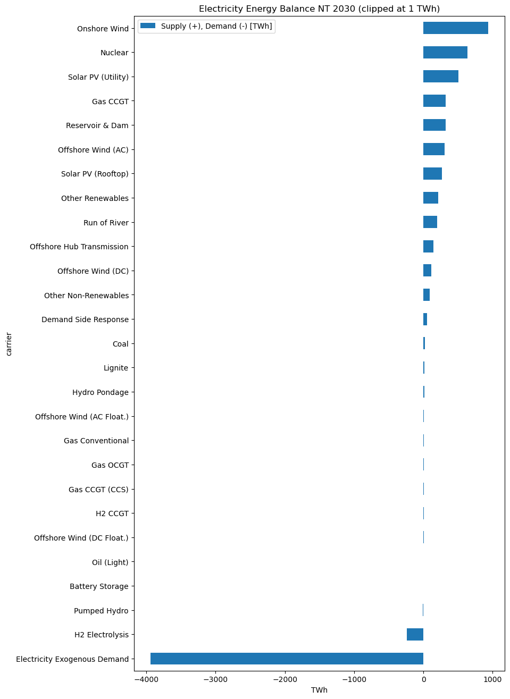
Visualizing results using PyPSA.statistics#
As we already introduced in a previous workshop, it is actually much easier to create quick plots with the PyPSA.statistics module that can be used to investigate the results of a model.
For example the electricity energy balance we investigated before…
s.installed_capacity.plot.bar(
bus_carrier=["AC", "low voltage"],
query="value>1e3",
height=6,
);
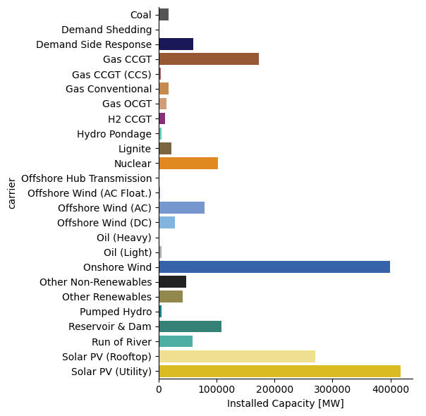
…or look at time series even:
s.energy_balance.plot.area(
bus_carrier=["AC", "low voltage"],
y="value",
x="snapshot",
color="carrier",
stacked=True,
aspect=5,
query="snapshot < '2009-03'",
);
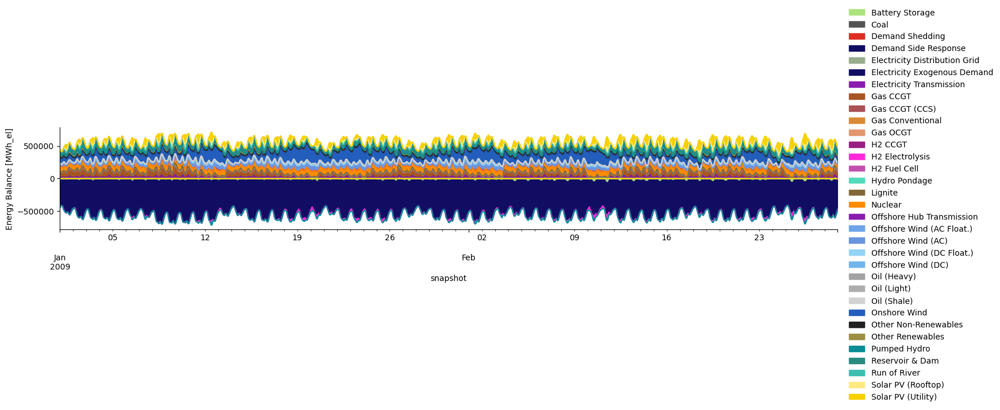
We can easily have a closer look at the production of a specific technology…
s.energy_balance.plot.line(
facet_row="bus_carrier",
y="value",
x="snapshot",
carrier="wind",
nice_names=True,
color="carrier",
aspect=5.0,
);
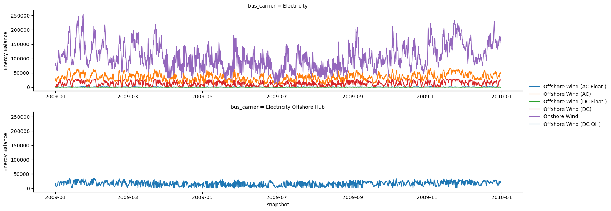
… or look at the dispatch for specific countries.
s.energy_balance.plot.area(
bus_carrier=["AC", "low voltage"],
y="value",
x="snapshot",
color="carrier",
stacked=True,
facet_row="country",
query="country in ['DE', 'FR'] and snapshot < '2009-03'",
aspect=5,
);
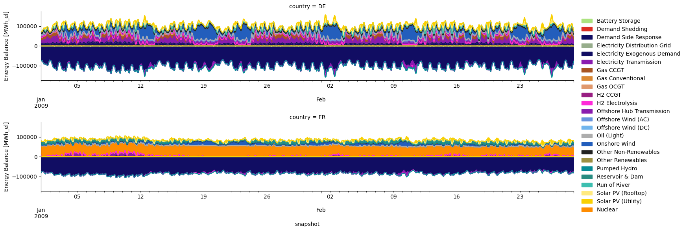
Compare results with PyPSA.NetworkCollections#
Lastly, one might also want to compare results between runs or planning years. To make this a bit easier, PyPSA v1.0 introduced a feature called Network Collections.
Let’s have a look at what this looks like. First we define a collection with our previously imported result networks for NT 2030 and NT 2040.
nc = pypsa.NetworkCollection(networks)
nc
NetworkCollection
-----------------
Networks: 2
Index name: 'network'
Entries: ['NT 2030', 'NT 2040']
We can now use PyPSA.statistics accessor directly on this NetworkCollection instead of a single network to get the metrics for them simultaneously. Let’s start again by defining a helper variable to make our life a bit easier going forward.
sc = nc.statistics
Now, let’s have a look at the electricity energy balance again but for both networks at once:
ebs = (
sc.energy_balance(
comps=["Generator", "Link", "StorageUnit", "Load"],
groupby=["bus_carrier", "carrier"],
nice_names=True,
aggregate_across_components=True,
)
.div(1e6)
.unstack("network")
.loc[["Electricity", "Electricity Low Voltage"]]
.droplevel("bus_carrier")
.sort_values("NT 2030", ascending=False)
)
ebs = ebs[abs(ebs["NT 2030"]) > clip] # Filter for entries > 1 TWh
ebs.style.format("{:,.2f}") # Make style a bit prettier
| network | NT 2030 | NT 2040 |
|---|---|---|
| carrier | ||
| Electricity Distribution Grid | 3,613.67 | 4,289.51 |
| Onshore Wind | 932.01 | 1,339.81 |
| Nuclear | 634.13 | 627.40 |
| Solar PV (Utility) | 506.26 | 806.74 |
| Gas CCGT | 322.81 | 208.61 |
| Reservoir & Dam | 320.71 | 331.90 |
| Offshore Wind (AC) | 302.74 | 463.42 |
| Solar PV (Rooftop) | 268.51 | 473.37 |
| Other Renewables | 211.10 | 219.50 |
| Run of River | 200.71 | 207.65 |
| Offshore Hub Transmission | 141.82 | 518.59 |
| Offshore Wind (DC) | 111.56 | 259.56 |
| Other Non-Renewables | 90.37 | 115.26 |
| Demand Side Response | 53.94 | 92.24 |
| Coal | 21.12 | 21.45 |
| Lignite | 15.27 | 14.17 |
| Hydro Pondage | 14.29 | 14.40 |
| Offshore Wind (AC Float.) | 9.74 | 51.82 |
| Gas Conventional | 9.19 | 3.12 |
| Gas OCGT | 7.94 | 7.25 |
| Gas CCGT (CCS) | 5.19 | 5.98 |
| H2 CCGT | 3.04 | 8.15 |
| Offshore Wind (DC Float.) | 2.86 | 18.67 |
| Oil (Light) | 1.62 | 2.12 |
| Battery Storage | -4.50 | -16.81 |
| Pumped Hydro | -8.50 | -17.13 |
| H2 Electrolysis | -238.52 | -932.35 |
| Electricity Distribution Grid | -3,613.67 | -4,289.51 |
| Electricity Exogenous Demand | -3,936.13 | -4,855.13 |
We can again create a simple plot to make this a bit easier to investigate
ebs.plot.barh(
figsize=(9, 16),
xlabel="Supply (+), Demand (-) [TWh]",
title=f"Electricity Energy Balance NT (clipped at {clip} TWh)",
);
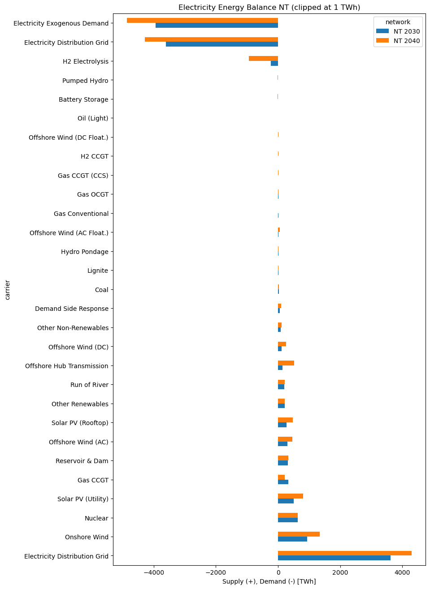
sc.energy_balance.plot.area(
bus_carrier=["AC", "low voltage"],
y="value",
x="snapshot",
color="carrier",
stacked=True,
aspect=1,
height=16,
query="snapshot < '2009-03'",
nice_names=False,
facet_row="network",
);
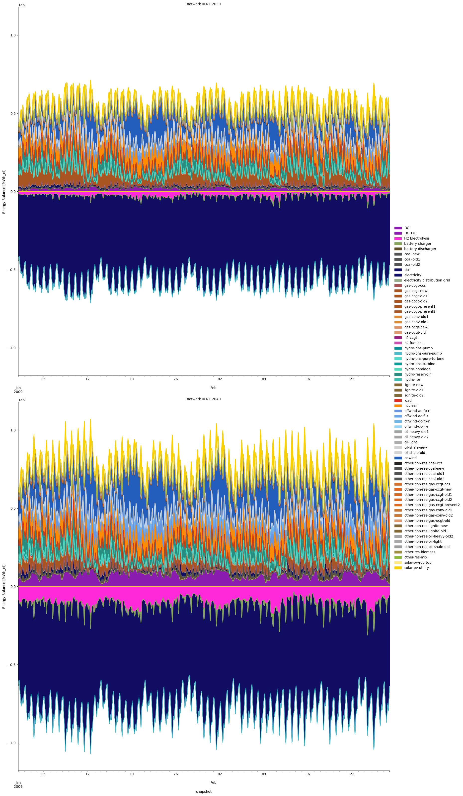
Similarly, we can also look at electricity prices in the system
prices = (
sc.prices(bus_carrier="AC", groupby=False, weighting="time").unstack("network")
# .sort_values("NT 2030")
)
prices
| network | NT 2030 | NT 2040 |
|---|---|---|
| name | ||
| AL00 | 80.854 | 91.300 |
| AT00 | 70.461 | 167.147 |
| BA00 | 80.475 | 90.099 |
| BE00 | 64.460 | 169.947 |
| BG00 | 80.841 | 88.048 |
| CH00 | 69.952 | 80.298 |
| CY00 | 80.952 | 100.626 |
| CZ00 | 78.640 | 335.594 |
| DE00 | 66.885 | 312.534 |
| DKE1 | 57.100 | 271.531 |
| DKW1 | 59.329 | 242.592 |
| EE00 | 52.586 | 153.704 |
| ES00 | 44.849 | 12.220 |
| FI00 | 40.102 | 193.978 |
| FR00 | 62.567 | 100.229 |
| FR15 | 239.169 | 434.041 |
| GB00 | 45.755 | 82.476 |
| GBNI | 33.470 | 35.710 |
| GR00 | 80.531 | 89.128 |
| GR03 | 80.936 | 100.237 |
| HR00 | 80.553 | 92.579 |
| HU00 | 80.946 | 104.413 |
| IE00 | 33.414 | 36.465 |
| ITCA | 68.251 | 63.461 |
| ITCN | 76.636 | 68.003 |
| ITCS | 76.512 | 66.875 |
| ITN1 | 77.937 | 82.364 |
| ITS1 | 68.234 | 63.508 |
| ITSA | 70.653 | 59.308 |
| ITSI | 68.217 | 62.344 |
| LT00 | 42.206 | 205.591 |
| LUB1 | 64.469 | 169.957 |
| LUF1 | 62.577 | 100.240 |
| LUG1 | 66.894 | 312.541 |
| LUV1 | 66.032 | 312.534 |
| LV00 | 50.770 | 153.383 |
| ME00 | 80.447 | 89.095 |
| MK00 | 80.846 | 91.455 |
| MT00 | 95.149 | 88.374 |
| NL00 | 60.405 | 252.705 |
| NOM1 | 43.066 | 18.649 |
| NON1 | 43.627 | 31.490 |
| NOS0 | 44.488 | 23.298 |
| PL00 | 79.003 | 287.923 |
| PT00 | 43.928 | 6.685 |
| RO00 | 80.194 | 87.303 |
| RS00 | 80.444 | 89.274 |
| SE01 | 42.378 | 234.105 |
| SE02 | 42.065 | 160.616 |
| SE03 | 44.427 | 183.686 |
| SE04 | 46.054 | 200.118 |
| SI00 | 81.167 | 105.935 |
| SK00 | 79.220 | 105.886 |
| ITCO | 76.538 | 67.999 |
| ITVI | 71.263 | 63.520 |
prices.plot.bar(
figsize=(25, 4),
edgecolor="white",
ylabel="€/MWh",
xlabel="Bus Carrier",
title="Electricity Price by node [EUR/MWh]",
);
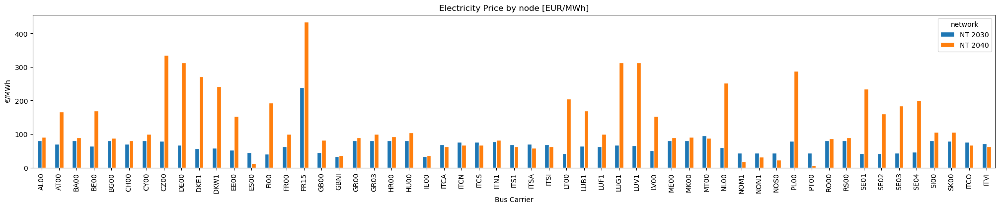
sc.prices.plot.bar(
bus_carrier=["AC"],
x="name",
y="value",
color="network",
stacked=True,
aspect=5,
nice_names=False,
title="Electricity Price by node [EUR/MWh]",
);
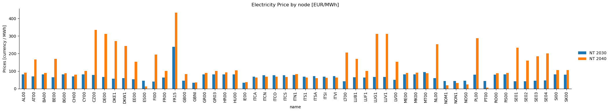
Task 1#
Familiarize yourself with the statistics module (again) and explore the latest results of Open-TYNDP using the different methods and plots introduced today.
Hint: You can also refer to the introduction section above for more information on the different methods and parameters of PyPSA.statistics.
Task 2#
If you feel comfortable using PyPSA.statistics, you can try to reproduce the Open-TYNDP results from the following example of our latest benchmarking figures.
show_benchmarks(
"benchmark_electricity_price_cy2009",
[2030],
"data/results-0.7.1/NT-cy2009-20260520/benchmarks/tyndp-2024/graphics_s_all___all_years/by_bus",
)
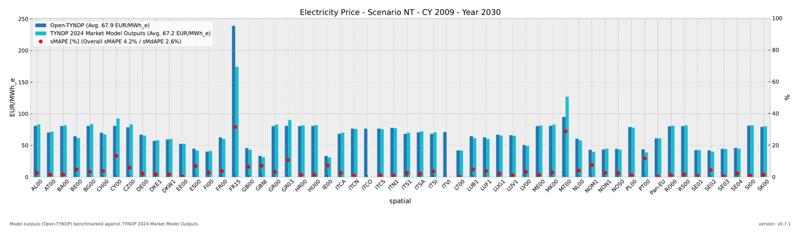
Task 3 (Advanced)#
(a) Can you verify that the net annual H2 flow in 2040 between the Netherlands and Germany is xy
(b) Can you verify that xy is the largest net annual importer of H2 in 2040?
(c) Can you verify xy
Hint:
2. Reminder: Interactive Exploration with PyPSA-Explorer#
As we introduced in the last workshop, PyPSA-Explorer is an interactive dashboard for visualizing and analyzing energy system networks. It provides:
Energy balance analysis with both time series and aggregated views
Capacity planning visualizations by technology and region
Economic analysis showing CAPEX/OPEX breakdowns
Interactive geographical network maps
Support for visualising multiple networks
Note
PyPSA-Explorer can be launched in different ways depending on your environment:
Local Jupyter: Use the terminal command (recommended) or inline display
Google Colab: The dashboard launches inline, embedded directly in the notebook
Follow the instructions below for your specific environment.
# Detect if running on Google Colab
try:
from google.colab import output
IN_COLAB = True
print(f"This notebook is running on Google Colab!")
except ImportError:
IN_COLAB = False
print(f"This notebook is running locally !")
port = 8050
This notebook is running locally !
For Local Users#
If you’re running locally, we recommend launching PyPSA-Explorer from the terminal for optimal performance:
pypsa-explorer data/results-0.7.1/NT-cy2009-20260520/networks/base_s_all___2030.nc:NT_2030 data/results-0.7.1/NT-cy2009-20260520/networks/base_s_all___2040.nc:NT_2040
This command opens the dashboard in your default browser at http://localhost:8050.
Alternative: The cell below can launch the dashboard inline within the notebook, though the terminal method provides better performance and responsiveness.
# Terminal method recommended
USE_TERMINAL = False # Change to True if you want to launch from the Terminal instead
if not IN_COLAB and not USE_TERMINAL:
# Local Jupyter: Inline display
app = create_app(networks)
app.run(jupyter_mode="tab", port=port, debug=False)
Dash app running on http://127.0.0.1:8050/
For Google Colab Users#
Running PyPSA-Explorer on Google Colab requires a small workaround to display the dashboard properly inside the notebook.
First, let’s define a helper function to handle the setup:
def run_pypsa_explorer_in_colab(networks, port):
print("Starting PyPSA Explorer for Google Colab...")
# Create and start the app
app = create_app(networks)
import threading
import time
def run_server():
app.run(jupyter_mode="external", port=port, debug=False)
server_thread = threading.Thread(target=run_server, daemon=True)
server_thread.start()
# Wait for server to initialize
time.sleep(5)
print(f"✓ Server started on port {port}")
# Display in iframe
output.serve_kernel_port_as_iframe(port, height=1500)
if IN_COLAB:
run_pypsa_explorer_in_colab(networks, port)
Tip for Colab users: To view the dashboard in fullscreen mode, click the three dots (⋮) in the top-right corner of the output cell and select “View output fullscreen”.
Task 3:#
Let’s look at the latest Open-TYNDP NT scenario results (v0.7.1) again and explore them interactively using the PyPSA-Explorer. Try to find some of the specific values we manually extracted in the previous section.
(a) Can you verify using the PyPSA-Explorer that the net annual H2 flow in 2040 between the Netherlands and Germany is xy
(b) Can you verify using PyPSA-Explorer that xy is the largest net annual importer of H2 in 2040?
(c) Can you verify xy
Note
Using the Dashboard
Once the dashboard opens, you can explore these key features:
1. Energy Balance Tab
View production, consumption, and storage patterns over time
Switch between time series and aggregated views
Filter by energy carrier (electricity, hydrogen, etc.)
Filter by country or region
2. Capacity Tab
Analyze installed capacities across scenarios
Compare capacity buildout between 2030 and 2040
View breakdowns by technology type and region
3. Economics Tab
Examine costs and revenues
Review CAPEX and OPEX breakdowns by technology
Compare regional cost distributions
Assess investment requirements
4. Network Map
Visualize the geographical network layout
View an interactive map with network components
Zoom and pan to explore specific regions
Tip: Use the scenario selector buttons in the top-right corner to switch between NT 2030 and NT 2040 scenarios.
Solutions#
Task 2: Reproduce benchmarks#
prices = (
s.prices(bus_carrier="AC", weighting="time").to_frame("Open-TYNDP").sort_index()
)
ax = prices.plot.bar(figsize=(16, 4), ylabel="EUR/MWh_e", xlabel="Node")
ax.set_facecolor("#e8e8e8")
ax.set_axisbelow(True)
ax.grid(True)
# Legend with average
handles, labels = ax.get_legend_handles_labels()
new_labels = [f"{label} ({prices[label].mean():.2f} EUR/MWh_e)" for label in labels]
ax.legend(handles, new_labels, loc="upper left")
ax.set_title("Electricity Price - Scenario NT - CY 2009 - Year 2030")
Text(0.5, 1.0, 'Electricity Price - Scenario NT - CY 2009 - Year 2030')
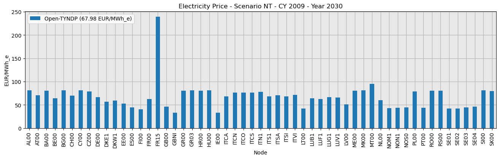
show_benchmarks(
"benchmark_electricity_price_cy2009",
[2030],
"data/results-0.7.1/NT-cy2009-20260520/benchmarks/tyndp-2024/graphics_s_all___all_years/by_bus",
)
Notebook clean up#
# Only clean up data when running in CI environment
if os.getenv("CI"):
rm_dir = "data/results-0.7.1"
print(
f"CI environment detected. Cleaning up notebook data by removing '{rm_dir}' and '{rm_dir}.zip'."
)
shutil.rmtree(rm_dir, ignore_errors=True)
Path(f"{rm_dir}.zip").unlink(missing_ok=True)
else:
print("Skipping cleanup (not in CI environment).")
CI environment detected. Cleaning up notebook data by removing 'data/results-0.7.1' and 'data/results-0.7.1.zip'.